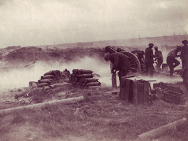
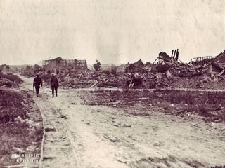
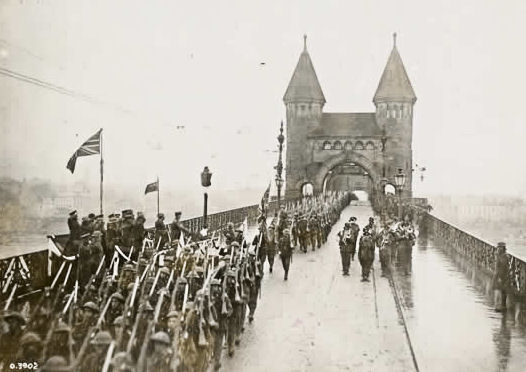

|  JULY
The
1st Canadian Heavy Battery is still at Nine Elms.
The daily firing is moderate; the hostile shelling
continues. To escape it, the guns change
position, but never very far from their targets. On July 19
the unit moves opposite Roclincourt (north of Arras)
and relieves the 116th Battery. Salvoes are fired every
day, with a peak on July 26 of more than eight hundred salvoes supporting an
infantry raid. The enemy hits back and the unit
comes under 5.9 or gas fire almost every day. The pace
quickens and a gunner is wounded on the last day of the month.
AUGUST
The daily salvoes continue at an average of two hundred a
day until August 20. The hostile fire continues too,
of course.
THE BATTLE
OF ARRAS
From August 21 the
shelling, given and received, grows more severe. The
Battle of Arras begins and the artillery, as is its
role, supports the infantry. On August 26 more than
twenty-one hundred salvoes are fired in support of the Canadian Corps. The next day,
nearly eight hundred. And so on until the last
day of the month. The whole battery moves to Fampoux. That
day it fires no salvoes, but the roads
and its new position are shelled with enemy 4.2 and 5.9
shells.
SEPTEMBER
The Battle of Arras goes on more fiercely than ever. On September 2,
after being hit by gas shells during the night, Charles's
unit fires two thousand six hundred and seventy salvoes (its
record for a single day's firing in this war).
Some
of these salvoes are aimed at aircraft flying low overhead,
and five salvoes are fired at a balloon. Over the following
days, the salvoes average five hundred. The unit comes under
heavy hostile fire, including gas shells every night. On September
4, two of the unit's guns are destroyed and twenty-five
of Charles's comrades are
hospitalized because of gas. The next day communications
are cut and enemy aircraft are very active during
the day. From September 7 to 9, the unit fires its salvoes
solely at the Corbaham bridges.
On September 10 the unit is
relieved by the 136th Heavy Battery RGA (a
British unit) late in the afternoon, and it moves to a new position in the Bois
de Boche under Canadian command.
From the very next day the salvoes
resume at a good pace on both sides. From
September 15 the firing gradually dies down. From September 23 to
26 both sides fall completely silent.
THE BATTLE OF THE CANAL DU NORD
On September 27, at 5 in the
morning, fifty 4.2 shells fall on Charles's unit.
No damage is done. Within minutes the 1st Canadian Heavy
Battery opens fire in support of the Canadian Corps attack.
More than eighteen hundred salvoes are fired on Raillencourt, Bourlon Wood,
Arras and Cambrai. At midnight the battery moves north of Bourlon
Wood, onto ground dearly won from the enemy.
The firing goes on, including nearly a thousand salvoes on Cambrai and the
area around it: railways, roads and bridges. On September 30 more
than fifteen hundred salvoes are fired on Bantigny, Cuvilliers and the surrounding area.
 OCTOBER
The battle goes on more fiercely
than ever. For several days the battery fires more than
a thousand salvoes, including eighteen hundred on October 9. The
enemy fire continues too, and Charles's unit
is shelled every day, though at night it mostly gets gas shells. The
battery advances, little by little, over ground won from the enemy.
By
October 24 it is in the forêt de Raismes (Raismes Forest),
shelling the area around Valenciennes.
NOVEMBER
On the 1st of the month the battery fires more than sixteen hundred salvoes. Over the following
days the firing runs from three hundred to eight hundred salvoes a day, aimed at
the area and roads around Valenciennes and Mons. On November
9 the battery fires a hundred and twenty salvoes and moves up towards Hainan.
The next day, no firing. The enemy is falling back fast.
Early on November 11 a message
reaches the unit: " Hostilities will cease at 11
a.m. Troops will stand fast on the line reached
at that hour, which will be reported to Canadian Corps
Headquarters. Defensive
precautions will be maintained. There will be no
intercourse of any kind with the enemy. Further instructions
will follow. " The Canadian infantry enters Mons.
On November 12 the men stay near
their guns. All is silent. The next day
the unit moves to Hainan, where the cleaning of the guns,
wagons, harness and all sorts of other equipment begins. The
stores are inventoried. This work goes on until
November 20, when the unit moves to Jemappes. It sets up
its bivouacs around the Château Sport-Royal and carries on
maintaining the equipment.
From November 27, in
short daily stages, the unit moves on foot towards Namur, then towards Germany. For
the Allies, this is the start of the occupation, as laid down in the
Armistice.
DECEMBER With rest days in between, Charles's artillery unit
continues its march towards Bonn, Germany (Namur
is 200 km from Bonn). It
arrives there on December 16. It
settles in and carries out the usual fatigues every day. The
men of the unit have a very merry Christmas.
The Canadians had prepared for guerrilla
attacks, or even fresh assaults by the German army, but
neither side wanted to continue the war. Their occupation
duties consisted of watching the bridges and people's
movements, and ensuring the distribution of
food and other goods.

The Canadian Corps crossing the Rhine
George Metcalf Archival Collection
CANADA'S
HUNDRED DAYS
Because of the leading role played
by the Canadian Corps in the victorious push to
Mons, the period from August 8 to November 11,
1918 came to be called "Canada's Hundred Days".
The
attacks all along the
German defensive line were backed by very heavy
artillery bombardments. Not only
did the Canadians manage to cross the Canal du Nord and open a breach, they also seized
Bourlon Wood, quite a feat. The troops won
other brilliant victories elsewhere on the British front; the
Hindenburg Line was well and truly broken.
Hard fighting followed, leading to the capture of Cambrai. On
October 11 the Canadian Corps reached the
Sensée canal. This was the last of the Canadian Corps' combined
operations, although missions continued to be given to
individual divisions while the Corps worked to liberate
Valenciennes before reaching Mons on the day
the Armistice was signed.

Armistice,
November 1918
Senior German and Allied commanders and politicians
sign the armistice ending the war in a railway carriage
near Compiègne, France, early on the morning of November 11,
1918. Marshal Foch, Supreme Allied
Commander, accepts the German surrender.
The Signing of the Armistice
Print by Pillard
Beaverbrook Collection of War Art

|
|